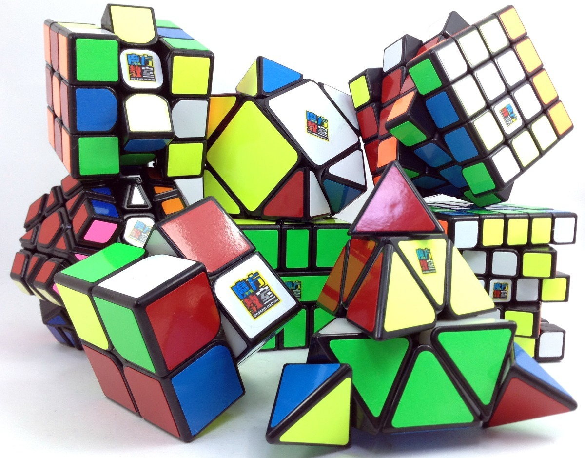

 Existen variaciones con diversos números niveles. Las principales versiones que hay son las siguientes: el 3×3×3, el cubo de Rubik original, el 4×4×4 (La venganza de Rubik), el 5×5×5 (El cubo del profesor); y desde septiembre de 2008 el 6×6×6 y el 7×7×7 de Verdes Panagiotis. La empresa Shengshou ha lanzado al mercado desde principios de 2012 cubos de 8x8x8, 9x9x9 y 10x10x10. Desde entonces salen tanto nuevos productos como nuevas marcas.